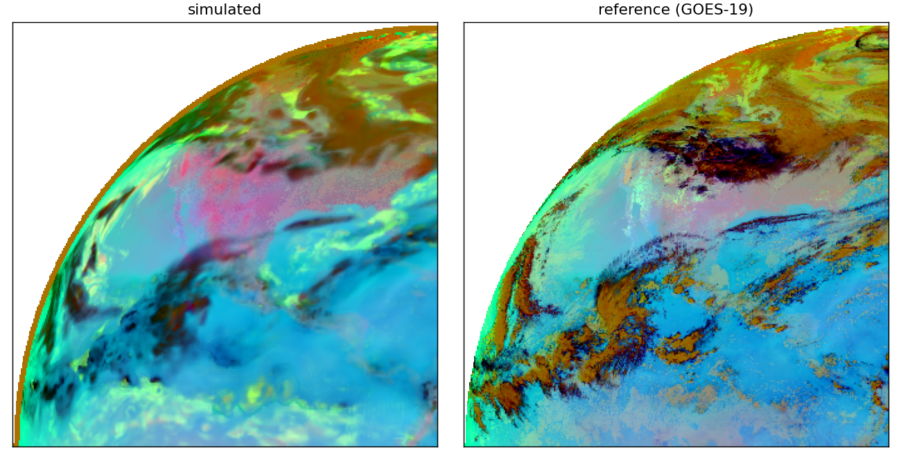
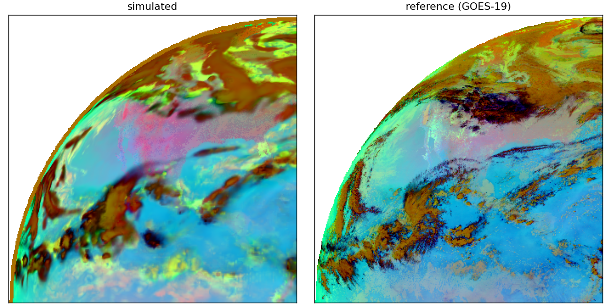

Each panel is the synthetic simulated ash RGB (left) next to the reference GOES-19 observation (right).
The two configs differ only in cloud parametrization: the baseline uses the default CRTM average overlap with gridbox-mean effective radii,
while the best-physics run adds the --in-cloud-reff correction and the maxran cloud-overlap fix.
average overlap)
runs/wyser_snow_k8/compare.png

maxran overlap
runs/wyser_snow_incloud_maxran_k8/compare.png
